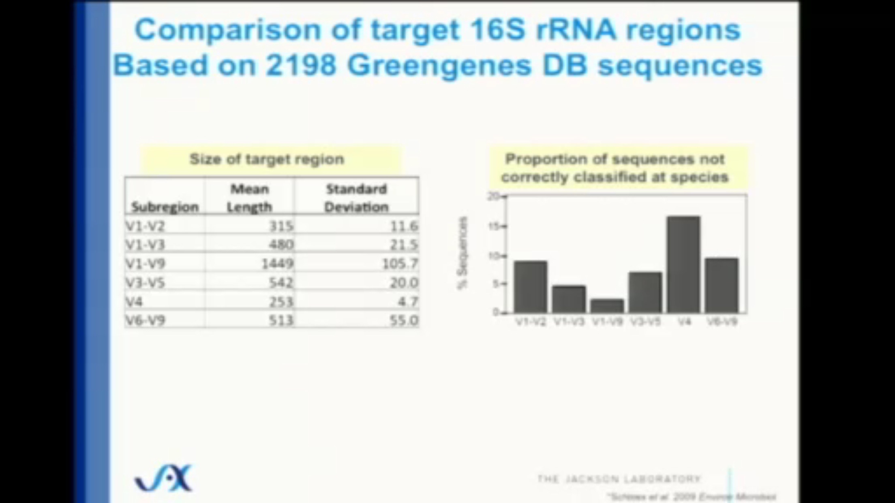

8 Methods
This chapter will go into more detail about methods, building on the Explore Your Microbiome chapter to show more precisely how I measured myself and how I used the tools needed to build this book.
8.1 The technology for studying microbes
People have been farming the microbes in fermented foods for thousands of years, so when in Pasteur times, scientists first began to cultivate them for experiments, the most obvious way was through the process known as “culturing”. Take a sample containing some microbes of interest, and leave them sit in a hospitable environment long enough for them to reproduce in enough quantity to be useful. That’s still a common way to study microbes, and that couple-of-day incubation period is one reason you don’t get your lab tests back for a few days.
Culturing also has several serious limitations. It only works if the microbes are still living, which rules out many important situations. Many microbes don’t culture well or at all outside their native habitat.
Anaerobes are organisms that can’t survive in the presence of oxygen, not a problem deep inside the airless gut, but it won’t work in a normal lab. While you can take some precautions to preserve the original environment as much as possible – you can set the organisms in a specially-sealed oxygen-free container –the cost and expense rises quickly.
Even if, somehow, you were able to overcome all the other challenges, many (perhaps most) microbes don’t grow well unless they are in close proximity to other specific species. Methanobrevibacter smithii, for example, which plays a critical role in the efficient digestion of complex sugars, removes hydrogen from its environment, providing a habitat for organisms that don’t like hydrogen, like Firmicutes and Bacterodetes. Plus, it converts all that excess hydrogen to methane, which in turn is needed by yet other organisms. Culturing any of those microbes on their own would be difficult, if not impossible.
But the techniques for uncovering which organisms are where and what they are doing was revolutionized in the first decade of the 2000s by those new-fangled gene sequencers that were so usefully applied to human genes.
8.1.1 The 16S rRNA Gene
Despite the plunging costs of DNA sequencing, the trillions of microbes in your gut still present a formidable chellenge if you intend to sequence them all. Even the humble E. coli contains nearly five million DNA letters. There is some commonality between related organisms — humans and chimpanzees, for example, share upwards of 90% of their DNA — but in general it’s hard to use the DNA strand itself to measure the relatedness between two organisms. Understanding the reason for this may help you understand why there is a clever shortcut.
You might think you can measure the relatedness of two organisms by looking at all the DNA in each one and computing the percentage that each shares in common. This would work, but sequencing all those billions of DNA bases takes a lot of time and money, and it would be impractical in a case like the microbiome where you may need to do this for millions of individual organisms.
A service like 23andme is able to cheaply compare individuals of the same species (i.e. Humans) because the generic human genome is already well-mapped and we know that of the 3 billion base pairs, only about 3 million (the SNPs or single-nucleotide polymorphisms) are different between individuals. When you give your spit sample to 23andme, they give you back a subset of your SNPs, only those that have been studied enough to be interesting. SNPs are easy and cheap to find using a “gene-chip”, a special semiconductor-like device that can quickly look at 1 million or more pre-determined spots on your DNA. But this is only possible because the map itself already exists, thanks to multi-year effort of the Human Genome Project that finished in the early 2000s. There are no comprehensive gene chips (yet) for bacteria, and certainly not for all the millions of species in nature. And even if there were such chips, bacteria are notorious at adapting and changing to their surrounding environment, exchanging genes with one another, that it just wouldn’t be practical to identify enough constant genes to make it worthwhile.
Fortunately, to get an overall picture of the types of microbes in your body, we don’t have to sequence every piece of DNA. For our purposes, we just want to know which organisms are there, and in what abundance. The precise bits of DNA are important only if they let us know the names of the microbes, and for this we don’t need to bother sequencing everything. In fact, most bacterial species differ enough from each other that we need only a few bits of DNA from each in order to tell them apart.
We know that all bacteria are distantly related to one another, and that closely-related species will have more DNA in common with each other. But some of parts of DNA are so important that they stay virtually identical even across entire families of organisms. Remember that DNA describes absolutely everything about the organism, including the workings of very low-level cell process. Not just the size or shape, but much more fundamental: how a cell divides, for example, or even how to use the oxygen a cell needs for survival.
Among the most fundamental of all processes is what happens in every cell’s ribosome, a special molecule that is core to how a cell converts DNA into proteins. Because all cells create proteins, they also always contain a ribosome and, importantly, they contain the instructions for how to create a ribosome in the form of the ribosomal gene. Each cell’s DNA includes a gene that precisely encodes every protein, in the exact order that makes up the ribosomal structure. A special enzyme, called DNA polymerase, manufactures new bits of RNA on the fly as it hits portions of the DNA. These bits of RNA, called messenger RNA or mRNA, eventually make their way to ribosomes, which are floating throughout the cell. Upon hitting the ribosome, mRNA is converted into the proteins that make all life possible. If it happens that the mRNA hits upon a segment of DNA that encodes a gene for a ribosome, guess what new molecule is manufactured? A new ribosome!
This ribosomal gene is such a fundamental part of every living organism that very little about the ribosome changes, even after hundreds of millions of years of evolution. Humans and corn plants actually share quite a bit of the ribosome; both are prokaryotes, for one thing, so many of our cellular processes work the same. But bacteria go back even further than humans and corn plants, enough so that the differences aren’t so subtle anymore. In fact, the differences are big enough that, with clever selection of the part of the genome to sequence, you can tell the difference between two bacteria in a few hours for a fraction of the cost of running through all the DNA you might find in a microbiome.
The gene that encodes ribosomal RNA (written rRNA) for bacteria consists of about 1500 base pairs total, a tiny fraction of the entire genome, and although it is mostly identical across all bacteria, there are some differences, all of which are contained in nine “hypervariable” regions containing even fewer base pairs. These regions, named V1 through V9, are surrounded by strings of base pairs that are constant throughout all bacteria, and can be quickly discovered and amplified by the right DNA primers. The fourth one of these regions, V4, contains only 250 base pairs, and is quickly and easily sequenced on commercially-available sequencing machines.
When you submit your sample to a lab, the bacterial cells must first be cut into pieces (“lysed”, to use the technical term). Sometimes the first part of this process happens at collection time, when you swab a tiny bit of your sample into a vial and stir. The vial contains tiny “beads” that smash into the cell walls as you stir, breaking them apart to spill their contents in an ugly liquid “goo”.
The lab is interested only in the DNA inside that goo, so they start by dropping in some carefully-constructed “primers”. These are bits of known, synthetically-made DNA that are designed to bind just to the parts of the cell DNA that make ribosomes. In particular, these primers will only find bits of DNA that make the specific, V4 subregion of the ribosome. Primers naturally bind and then break open the DNA at precise locations, cutting out all the segments that match.
Throw this goo into a centrifuge spinning at a carefully controlled, very high speed, and different parts of the goo will rise to different levels, reflecting their molecular weights. One specific part, corresponding to the section programmed to make ribosomes, will rise to a centrifuge level referred to as “16S”. Precisely skimming the goo at that spot will give the technician a collection of DNA from just one part of the ribosome of bacteria. The rest of the DNA, millions of letters (base pairs) per bacteria, will not be sequenced and is simply discarded. That’s the shortcut. Instead of sequencing millions of base pairs, we need sequence only hundreds.
Once you have a bunch of that 16S ribosomal gene, you know that you are looking exclusively at non-human bacterial and archaeal DNA. It’s a tiny subset of all the genetic information in the microbiome, but combined with one more shortcut, it gives a surprisingly accurate look at the overall composition of a sample.
The remaining shortcut is possible thanks to years of research of sequencing the genes in bacteria. Scientists in labs around the world have been faithfully digging up samples of bacteria, and performing whole-gene sequencing on what they find. Although 250 base pairs may seem like a tiny number to differentiate among all possible bacteria on earth, for gut microbiome purpoes we need concern ourselves only with those that are known to inhabit humans. The Human Microbiome Project already identified most of these bacteria – and their 16S gene identifiers – so armed with that as a reference database1, it is generally possible to unmask a specific microbe with just a sliver of DNA.
It’s this two-step combination, 16S “skimming” and a database lookup, that makes it cost effective to study the millions of organisms in your microbiome. You don’t have to do a complete gene sequence on every single bacterium; just trust that the tiny subset of DNA in the 16S region is enough to uniquely match something already in the bacterial database.
The alternative – sequence everything in the sample – provides much more accuracy of course, but the 16S approach comes surprisingly close. Careful studies that compare with the “sequence everything” (aka metagenomic) approach show that 16S is still surprisingly close – at least 80% and often much more of the entire microbiome can be categorized accurately, even at the species level.
8.1.1.1 Limitations of 16S
While 80%+ accuracy for such a cheap and fast method of sequencing is impressive, it’s important to remember that we’re still not seeing the whole story. Despite its low cost and wide use, microbiome studies that focus only on the 16S gene suffer from several inaccuracies compared to other, more expensive methods.
For one thing, this type of sequencing sees only the bacteria in a sample. Other important single-cell, invisible microbes won’t be detected: yeasts, fungi, and most archaea. Viruses, including phages that prey on bacteria, are also not part of the 16S summary.
The thousands of genes in each of the trillion bacteria in your system are doing important work that won’t be visible if we sequence a portion of just one of them. Much of the time, this doesn’t matter, because the vast majority of the unsequenced portion is genes that are identical to those that have already been sequenced by previous scientists. To use an analogy in the visible world, if you have identified that an organism is a bird, it’s very likely – though not certain – that it can fly. For nearly all bird species that would be a safe bet, but among the birds that actually matter to humans, you’d have an important detail wrong about chickens.
Other problems with 16S microbiome testing technology: it’s limited in what it can see, and RNA itself is too unstable. One careful study concluded:
“16s rRNA predicts genome-wide levels of similarity very well for distantly related prokaryotes, but not for closely related ones”2
Worse, there are many important bacteria that share identical 16S sequences yet occupy entirely different ecological niches 3. Because the sequences are identical, different labs may arbitrarily assign different names to the same organism. 4
8.1.2 Limitations of collection
Another source of possible error depends on how the sample was collected, and how it was handled after collection. The gold standard of collection requires a subject to be physically present in a lab, where the sample is collected and sequenced immediately, or else quickly frozen and then pulverized into tiny pieces that are carefully blended and then sequenced. Not only is that expensive, but it requires the subject to “poop on demand”, which isn’t always feasible. A common alternative asks the subject to place all or a scoop of the sample into a freezer which is sent to the lab later.
Most home-based collection methods require you to collect a tiny swab of material which is then placed in a vial for shipment through the mail. The vial usually contains a special buffering chemical that keeps any DNA inert during transit. Because DNA is generally pretty stable, a vial preserved this way can usually remain usable for months or even years at room temperature.
How much does that affect the final result?
Several studies have tried to compare collection methods, with mixed results. The most systematic study, performed by scientists at the Centers for Disease Control tested 8 hospital patients.5 Collecting samples from the bowel movements as well as rectal swabs inserted up the you-know-where at specific time periods, the researchers concluded that the differences within an individual are much smaller than the differences between individuals. In other words, although a single sample may have some variability depending on exactly where you swab, it won’t matter if you’re comparing to somebody else.
I tried several different ways of collecting samples, and discovered that the results do indeed depend greatly on the sampling conditions. See my detailed results in the Experiments: collection chapter.
The above limitations are important, and there’s no question that you should keep them in mind when exploring your own microbiome, but the low price and accessibility of the technology makes up for it in many important applications.
Thans to these new machines originally developed for mass DNA sequencing, the process of finding and understanding microbes has been revolutionized. It’s now possible to search for new life forms without growing them in a culture, and this has made possible a major shift in how to think about life —and what is important and special about human hardware.
Unlike the genetic discoveries you can make by understanding your DNA (from a low-cost consumer service like 23andme), much of the news from the microbial world is actionable. There’s little, if anything, you can do if you find you have a particular type of gene that gives you, say, a propensity to alzheimers for example. But because the microbes around you are constantly changing anyway, and because you can influence which ones grow and which don’t, the world of the human micro biome is eminently actionable.
A very popular one is Greengenes: http://greengenes.secondgenome.com/downloads. Learn about all the big ones here: https://bmcgenomics.biomedcentral.com/articles/10.1186/s12864-017-3501-4#Fig3↩︎
Lan, Y., Rosen, G., & Hershberg, R. (2016). Marker genes that are less conserved in their sequences are useful for predicting genome-wide similarity levels between closely related prokaryotic strains. Microbiome, 4(1). https://doi.org/10.1186/s40168-016-0162-5↩︎